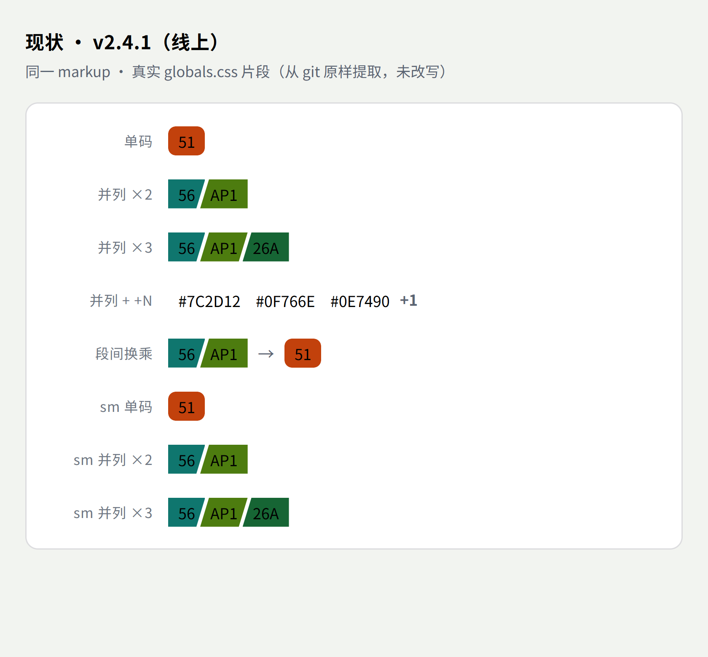
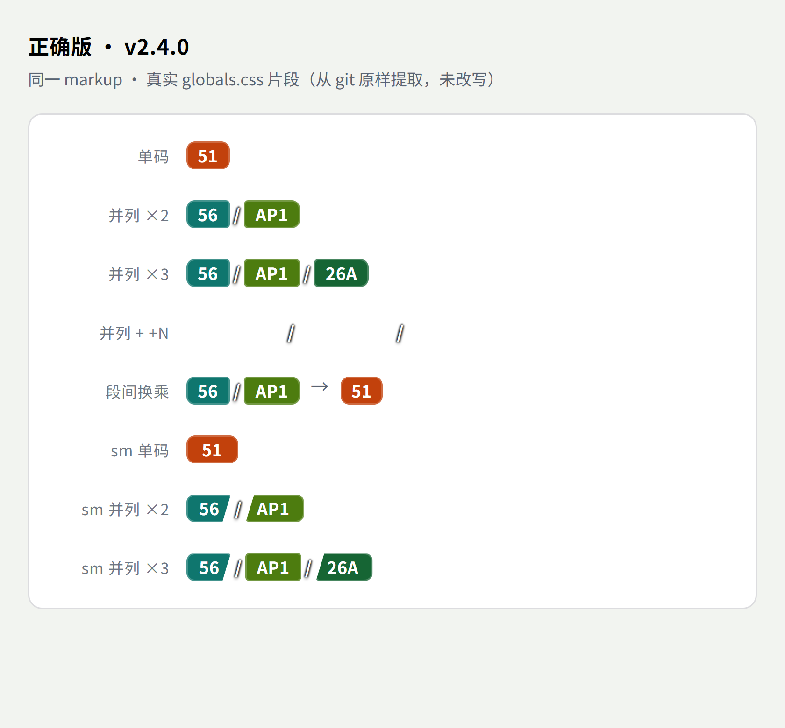

用户原话里其实给了**三个可判定的条件**，逐条用实测值比对即可定论，无需主观判断：
| 条件 | v2.4.1（现线上）实测 | v2.4.0 实测 | 结论 |
|---|---|---|---|
| 圆角 | 单码 6px；并列块 0px（被 clip-path 削掉） |
单码 6px；并列首块 6px 3px 3px 6px、末块 3px 6px 6px 3px |
v2.4.1 不满足 v2.4.0 满足 |
| 白色 | 无斜杠元素（.route-stack__slash 计数 = 0）；缝里露的是卡片背景色（不保证白） |
斜杠计数 = 1（×2 时）/ 2（×3 时）；color: rgb(255,255,255) + text-shadow 4 段黑描边（任何底色上都呈「白色斜间隙」） |
v2.4.1 不满足 v2.4.0 满足 |
| 白字 | rgb(255,255,255) |
rgb(255,255,255) |
两者都满足（无区分度） |
| 「部分没做圆角」 | 同一个组件内 6px 与 0px 混排 —— 精确命中用户这句描述 |
全组件一致（外 6px / 内 3px） | v2.4.1 是问题源 |
| 斜切直角 | 并存 | 无（clip-path: none 于并列块；仅 sm 档有残留，见 §3） |
v2.4.0 |
⇒ 用户三条件中，v2.4.1 有两项不满足，v2.4.0 三项全满足。「用户要哪个」因此不是主观取舍，而是可用用户自己的原话判定的客观问题。


git show HEAD:src/app/globals.css 与 git show 7842648:src/app/globals.css 的 route-stack 段**原样提取**（未改写），在 headless Chrome 390px 容器内渲染 @3x。
| 取样点 | 属性 | v2.4.1（线上） | v2.4.0（正确版） |
|---|---|---|---|
| 单码 | border-radius | 6px | 6px |
| clip-path | none | none | |
| padding / font-size | 3px 8px / 12px | 3px 8px / 12px | |
| 实测盒 | 31 × 20 | 31 × 20 | |
| 并列 · 首块 | border-radius | 0px | 6px 3px 3px 6px |
| clip-path | polygon(0 0, 100% 0, calc(100% - 7px) 100%, 0 100%) | none | |
| margin-right | -4px（咬合） | 0px | |
| 并列 · 末块 | border-radius | 0px | 3px 6px 6px 3px |
| clip-path | polygon(7px 0, 100% 0, 100% 100%, 0 100%) | none | |
| 并列 · 组容器 | border-radius / 底色 | 0px / rgba(0,0,0,0) | 7px（--radius-group-pad） / rgba(0,0,0,0) |
| 斜杠 | 是否存在 | 否（计数 0） | 是（×2 组 → 1 个；×3 组 → 2 个） |
| color | — | rgb(255,255,255) | |
| text-shadow | — | 有（4 向黑描边） | |
| sm 单码 | border-radius / clip | 6px / none | 6px / none |
| padding | 3px 8px（sm 无差异） | 3px 11px（sm 生效） | |
| sm 并列 | border-radius | 0px | 6px 3px 3px 6px |
| clip-path | 有（斜切） | 仍有（斜切残留） v2.4.0 自身 bug | |
| `+N` 折叠块 | color | --muted（可读） | #fff 无描边 ⇒ 白字白卡不可见 v2.4.0 自身 bug |
.route-stack--sm .route-stack__seg:first-child { clip-path: polygon(...6px...) } 写在 3058 段之前…
实测结果是 —— sm 并列块的 clip-path 仍然生效（上表：polygon(0 0, 100% 0, calc(100% - 6px) 100%, 0 100%)），
即 sm 档下「每块圆角」被打回直角斜切，与 sm 单码的 6px 圆角不一致。
.route-stack--sm 规则里只保留尺寸类属性（padding / font-size），
删掉其中所有 clip-path 声明。这样才顺带真修掉长期挂着的 size="sm" 失效（D5），
而不是把一个「sm 直角斜切」的新 bug 一起带进来。
+N 白字白底不可见.route-stack__more { color:#fff } 没有描边（同提交给 __slash 加了描边却漏了它），
而多码组底是 transparent ⇒ 白卡上 +N 看不见。
⇒ 保留当前 --muted（=「v2.4.0 + 2 处修正」）。
.route-stack 确实声明了两次（① inline-flex / align-items:stretch / border-radius:6px / overflow:hidden / flex-shrink:0 / max-width:100%；
② flex-wrap:wrap / row-gap:4px / overflow:visible）。按净效果写一条是正确做法，验收不会按字面比对，请按下面这条写即可：
.route-stack {
display: inline-flex;
align-items: center; /* ② 覆盖 ① 的 stretch；v2.4.0 实测布局为居中 */
flex-wrap: wrap;
row-gap: 4px;
flex-shrink: 0;
max-width: 100%;
overflow: visible; /* ② 生效；① 的 overflow:hidden 与 border-radius:6px 均被弃用 */
/* border-radius 交给「块本体 / 组容器」承担 —— 容器不再裁剪 ⇒ 多段换行不会被切边 */
}
.route-stack__seg / .route-stack__group / .route-stack__slash），
不比对容器字面声明，所以「写一条」与「抄两段」都能通过 —— 放心按净效果写。